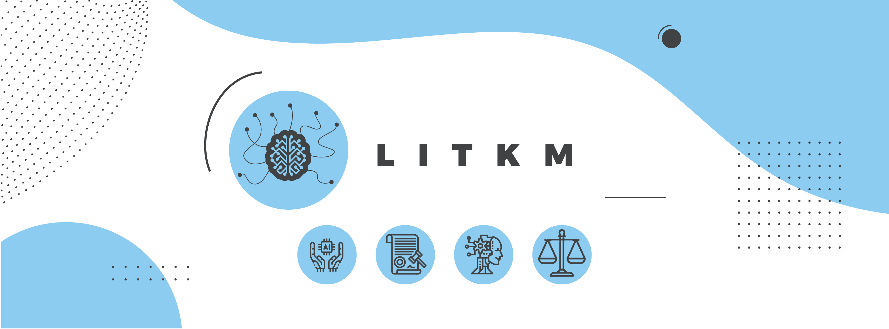

Welcome to LitKM! Many machine learning texts recommend blogging as a way to help one learn the discipline. So, voila. My name is Charles Dobson and I’m a lawyer experimenting with applying machine learning to litigation.
Fair warning: I am a self-taught, amateur coder, with no technical background. If you are an expert, feel free to tell me what I am doing wrong. In detail, preferably!
Posts
A README re: this Blog (Pinned Post)
Reading List: Resources I've Found Helpful (Pinned Post)
Using Logistic Regression to Predict SCOTUS Judging
Using K-Nearest Neighbor to Predict SCOTUS Judging
Finding Analogous Cases with K-Nearest Neighbor
Using Machine Learning to Find Analogues in Legal Data
Cyborg Barristers: A Golden Age for Oral Advocacy
How to Load Text Files as a Corpus for NLTK in Google Colab
Parsing a Neural Network for Predicting SCOTUS Judging
Using Artificial Intelligence to Predict SCOTUS Judging